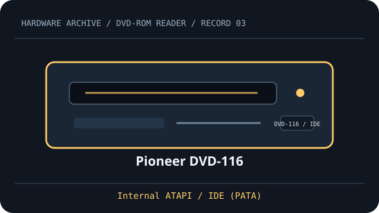

[ DVD-ROM READERS // IDENTIFIED MODEL ]
Pioneer DVD-116
Read-only DVD-ROM/video and CD media support. Rated maximums and host setup below are specific to Pioneer DVD-116; verify the complete OEM suffix and firmware on the label.

IDENTIFICATION: Compare the full model, suffix, OEM part number and firmware to the cited documentation before fitting, servicing, or attempting preservation reads.
Documented specifications
| Catalog subcategory | DVD-ROM readers (read-only model class) |
|---|---|
| Exact model | Pioneer DVD-116 |
| DVD read formats | DVD-ROM, DVD-Video |
| DVD read speed | up to 16×; vendor maximum, not a sustained guarantee |
| CD read formats | CD-ROM, CD-DA (audio CD) |
| CD read speed | up to 40×; vendor maximum, media and mode dependent |
| Interface | Internal ATAPI / IDE (PATA) |
| Bay and mechanism | 5.25-inch half-height tray-load bay; measure chassis depth, faceplate and mounting points before installation. |
| Host compatibility | Requires an IDE/ATAPI host controller and 40-pin PATA connection. DVD-Video playback also requires compatible host software and region support. |
| Firmware, region and jumper caveats | Select Master, Slave, or Cable Select with the drive’s jumper block as shown in the exact DVD-116 instructions. DVD-Video region changes are firmware/player controlled; check the installed firmware and remaining region changes before playback. |
Host fit & preservation notes
- Requires an IDE/ATAPI host controller and 40-pin PATA connection. DVD-Video playback also requires compatible host software and region support.
- Select Master, Slave, or Cable Select with the drive’s jumper block as shown in the exact DVD-116 instructions. DVD-Video region changes are firmware/player controlled; check the installed firmware and remaining region changes before playback.
- Read ratings do not imply write capability. Treat writable/rewritable media as supported only when this exact model manual explicitly lists it.
- For imaging, record the complete drive label, OEM suffix, firmware, host controller, software, disc type and read errors; retain checksummed images and logs.
- Handle discs by the edge or center hole; use a clean case in cool, dry storage away from direct sunlight. Avoid adhesive labels, abrasives and undocumented polishing/solvents.
Optical media access is sensitive to disc condition, firmware and host software. A published peak “×” rating is a format-specific maximum, not guaranteed throughput.
Model documentation
- Pioneer DVD-116 manual listing (ManualsLib)Model-specific operating-manual listing; match revision and OEM suffix before using installation or region instructions.
- Pioneer DVD-116 operating-manual pages (ManualsDump)Scanned manual page with DVD-116 feature/specification and installation context.